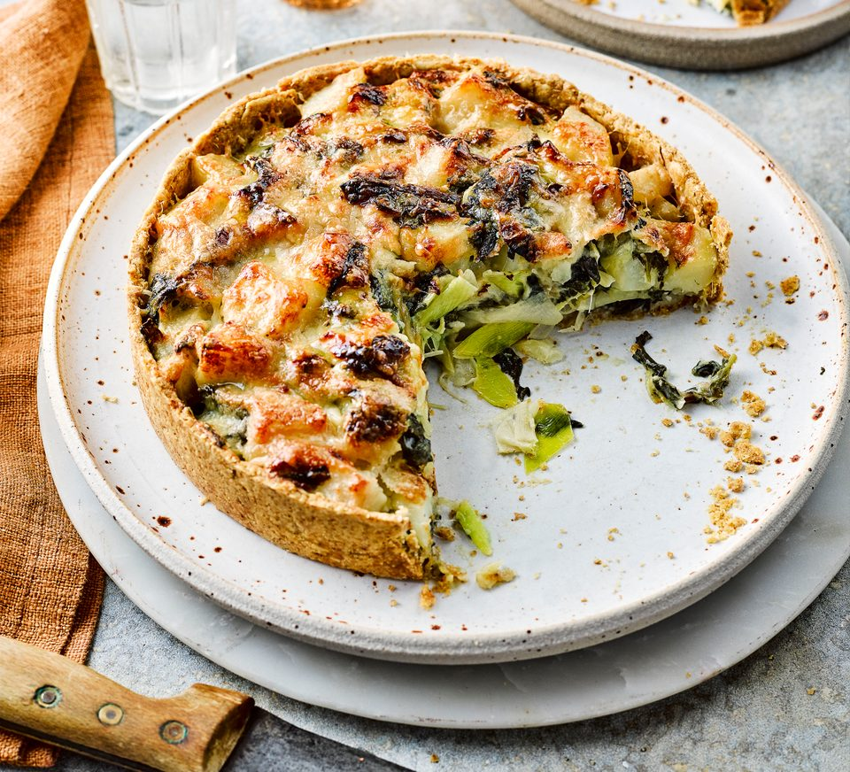

Homity Pie

Description
A vegetarian pie, made with hearty ingreadients. Great for winter days.
Ingredients
Filling:
- 600g floury potatoes (e.g. Maris-Piper), peeled and roughly diced
- 2 leeks, sliced
- butter, for frying
- 1 clove garlic, minced
- 200g spinach, chopped
- 5 tbsp soft cheese
- 150g mature cheddar, grated
Pastry:
- 100g plain flour
- 100g wholemeal flour
- 1/4 tsp smpked paprika
- 1/2 tsp salt
- 100g butter, cubed and chilled
- 1 egg, beaten
Method
Pastry:
- Mix flours, paprika, butter and salt in a food processor until it forms breadcrumbs.
- Add egg and a splash of cold water and whizz until it forms a dough.
- Roll out the dough and use to line a 20cm loose bottom tin, then refrigerate the pastry-lined tin.
Filling:
- Boil potatoes in salted water until just tender, then drain.
- Fry the leeks in butter until soft.
- Add the garlic and cook for 1 more minute.
- Stir in the spinach and cook until wilted, then stir in the soft cheese.
- Mix the potatoes, 3/4 of the cheddar and the leek and spinach mixture into a large bowl and mix together well with lots of seasoning, then tip into the pastry case and top with the rest of the cheddar.
Baking:
- Bake in an oven preheated to 190C/fan 170C/gas mark 5 for 40-45 minutes. The top of the pie should be golden brown.
- Leave in the tin for 10 minites to cool once removed from the oven, then turn out and serve.
Homepage